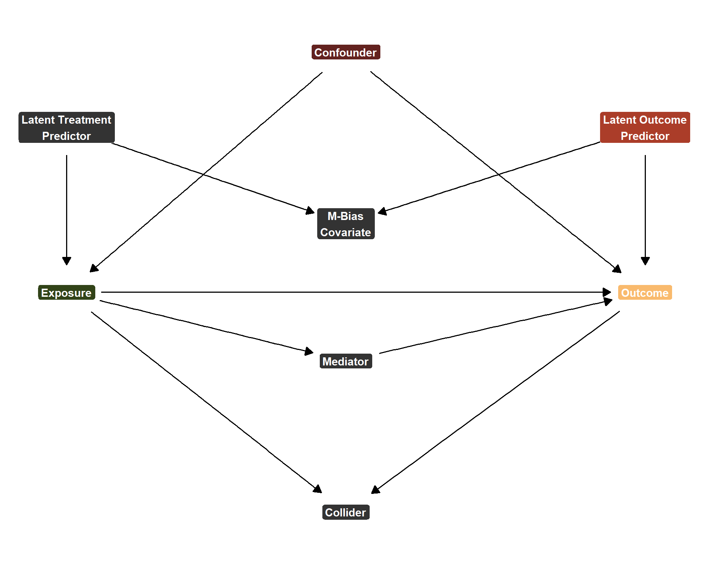
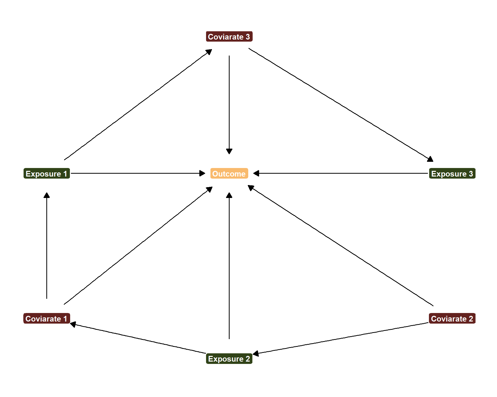
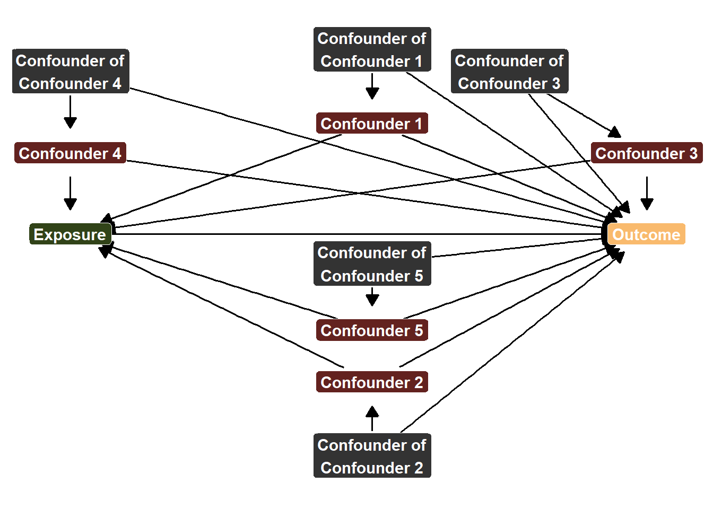

It’s tempting to throw a bunch of variables of interest into a model and evaluate each variable’s ‘impact’ on the outcome, but proceed at your own caution! Check this blog out to see why that approach is most likely not the best idea…
Published
May 15, 2025
Code
# Load Librariespacman::p_load("dplyr", # Data Manipulation"dagitty", # DAGs"ggdag", # Visualizing DAGs"ggraph", # More DAG Visualizations"ggplot2", # Data Visualization"tidyr", # Re-Shaping"modelsummary", # Presenting Model Resultsinstall =FALSE)# Define a Custom Themeblog_theme <-function() {theme_bw() +theme(panel.grid.major =element_line(color ="gray80", size =0.3),panel.grid.minor =element_blank(),panel.border =element_blank(),plot.background =element_rect(fill ="white", color =NA),plot.title =element_text(face ="bold", size =16, margin =margin(t =0, r =0, b =15, l =0)),axis.title.x =element_text(face ="bold", size =14, margin =margin(t =15, r =0, b =0, l =0)),axis.title.y =element_text(face ="bold", size =14, margin =margin(t =0, r =15, b =0, l =0)),strip.text =element_text(face ="bold"),axis.text.x =element_text(face ="bold", size =10), axis.text.y =element_text(face ="bold", size =10), axis.ticks.x =element_blank(), axis.ticks.y =element_blank(), strip.background =element_rect(fill ="grey80", color =NA),legend.title =element_text(face ="bold", size =14),legend.text =element_text(face ="bold", size =10, color ="grey25"), )}# Establish a Custom Color Schemecolors <-c("1"="#133a29","2"="#ab3d29","3"="#f9ba6d","4"="#314318","5"="#63221f")
Intro
It is tempting for practitioners and clients alike to feel that we can develop a “model” that can answer our questions. But the idea of shooting for a single model is flawed, regardless of what you’re trying to do. If you are seeking to do machine learning things, there’s a lot of virtue in ensemble approaches. From the causal inference approach, it is very easy to let a single model do too much and, as a consequence, severely damage the credibility of your results.
This is especially a problem when asked to do some sort of “shotgun causal inference”. I have no clue if someone else has used this term before, but the desire for shotgun causal inference is apparent in academic and non-academic settings. It all starts with this question: “what are the predictors/explanations/factors that impact”, etc. What is the problem here? Well, for one, the task is insurmountable. All the things?
In reality, such questions can really be boiled down to “find as many variables that you think explain some outcome of interest and test them”. But this is actually a very hard causal inference problem (which is part of the reason why academic hypotheses tend to be narrow and only focus on one potential causal factor for each research project). Even though shotgun causal inference is hard, there is one rule that should never be violated…
When testing multiple hypotheses, do not throw everything into the same model and assume that this model provides interpretable results. To demonstrate why this should be avoided, let’s go over quick refresher on the concept of “bad controls” and what they do. This will be important for understanding why we should not test multiple hypotheses within the same model.
A Refresher on the Consequences of “Bad Controls”
For those not familiar, I go into greater detail on this subject in a prior blog post. However, the TLDR of this point is that different hypotheses require different adjustment sets. Adjustment sets are the unique combination/specification of covariates that are required to be adjusted for to give any \(X \rightarrow Y\) relationship a causal interpretation.
The problem is that the same covariate can have a different causal role for different hypotheses. Confounders (\(X \leftarrow Z \rightarrow Y\)) should always be controlled for, but what happens when a confounder for the \(H_{1} \rightarrow Y\) relationship is a bad control for the \(H_{2} \rightarrow Y\) relationship?
Let’s assume that we are interested in testing the \(H_{1} \rightarrow Y\) relationship and we add some other controls that, while necessary for the other hypotheses, are harmful for identifying \(H_{1} \rightarrow M \rightarrow Y\). Below, I simulate three different situations where the influence of these bad controls ranges from large to medium to small. I simulate two post-treatment controls (a mediator: \(X \rightarrow Y\) and a collider: \(X \rightarrow C \leftarrow Y\)) and an instance of M-Bias. The idea for this simulation exercise is to show how much our model deviates from estimating the true causal effect when adjusting for other bad covariates.
set.seed(1234)n <-100000# Data Where "Bad Controls" Have a Large Effectlarge <-tibble(u1 =rnorm(n, 0, 1),u2 =rnorm(n, 2, 0.5),m_bias =0.8* u1 +0.8* u2 +rnorm(n, 0, 0.25),confounder =rnorm(n, 0, 1),exposure = confounder *1.5+ u1 *0.8+rnorm(n, 0, 0.5),mediator = exposure *2+rnorm(n, 0, 0.5),outcome = (1.5* exposure + mediator) + confounder *3+ u2 *0.8+rnorm(n, 0, 0.5),collider = exposure *1.25+ outcome *0.7+rnorm(n, 0, 0.5))# Estimate 4 Regressions Adding Increasingly More Controlslarge_unbiased <-lm(outcome ~ exposure + confounder, data = large)large_mediator <-lm(outcome ~ exposure + confounder + mediator, data = large)large_collider <-lm(outcome ~ exposure + confounder + mediator + collider, data = large)large_mbias <-lm(outcome ~ exposure + confounder + mediator + collider + m_bias, data = large)# Data Where "Bad Controls" Have a Medium Effectmedium <-tibble(u1 =rnorm(n, 0, 1),u2 =rnorm(n, 2, 0.5),m_bias =0.4* u1 +0.4* u2 +rnorm(n, 0, 0.25),confounder =rnorm(n, 0, 1),exposure = confounder *0.75+ u1 *0.4+rnorm(n, 0, 0.5),mediator = exposure *1+rnorm(n, 0, 0.5),outcome = (1.5* exposure + mediator) + confounder *3+ u2 *0.4+rnorm(n, 0, 0.5),collider = exposure *0.625+ outcome *0.7+rnorm(n, 0, 0.5))# Estimate 4 Regressions Adding Increasingly More Controlsmedium_unbiased <-lm(outcome ~ exposure + confounder, data = medium)medium_mediator <-lm(outcome ~ exposure + confounder + mediator, data = medium)medium_collider <-lm(outcome ~ exposure + confounder + mediator + collider, data = medium)medium_mbias <-lm(outcome ~ exposure + confounder + mediator + collider + m_bias, data = medium)# Data Where "Bad Controls" Have a Small Effect Effectsmall <-tibble(u1 =rnorm(n, 0, 1),u2 =rnorm(n, 2, 0.5),m_bias =0.2* u1 +0.2* u2 +rnorm(n, 0, 0.25),confounder =rnorm(n, 0, 1),exposure = confounder *0.375+ u1 *0.2+rnorm(n, 0, 0.5),mediator = exposure *0.5+rnorm(n, 0, 0.5),outcome = (1.5* exposure + mediator) + confounder *3+ u2 *0.2+rnorm(n, 0, 0.5),collider = exposure *0.3125+ outcome *0.7+rnorm(n, 0, 0.5))small_unbiased <-lm(outcome ~ exposure + confounder, data = small)small_mediator <-lm(outcome ~ exposure + confounder + mediator, data = small)small_collider <-lm(outcome ~ exposure + confounder + mediator + collider, data = small)small_mbias <-lm(outcome ~ exposure + confounder + mediator + collider + m_bias, data = small)
Again, strictly for testing \(H_{1}\), the data generating process can be represented with this DAG:
Code
dgp1_dag <-dagitty('dag { bb="0,0,1,1" "M_Bias_Node" [pos="0.47,0.35"] "Unobserved (Outcome)" [pos="0.545,0.28"] "Unobserved (Treatment)" [pos="0.4,0.28"] Collider [pos="0.47,0.56"] Confounder [pos="0.47,0.225"] Exposure [exposure,pos="0.4,0.4"] Mediator [pos="0.47,0.45"] Outcome [outcome,pos="0.545,0.4"] "Unobserved (Outcome)" -> "M_Bias_Node" "Unobserved (Outcome)" -> Outcome "Unobserved (Treatment)" -> "M_Bias_Node" "Unobserved (Treatment)" -> Exposure Confounder -> Exposure Confounder -> Outcome Exposure -> Collider Exposure -> Mediator Exposure -> Outcome Mediator -> Outcome Outcome -> Collider }') %>%tidy_dagitty() %>%mutate(y =1- y, yend =1- yend) ggplot(dgp1_dag, aes(x = x, y = y, xend = xend, yend = yend)) +geom_dag_edges_link(size =4, arrow =arrow(length =unit(0.3, "cm"), type ="closed"), start_cap =circle(0.05, "npc"), end_cap =circle(0.05, "npc") ) +geom_point(aes(x = x, y = y), color ="white", size =1) +geom_label(aes(label =case_when( name =="M_Bias_Node"~"M-Bias\nCovariate", name =="Unobserved (Outcome)"~"Latent Outcome\nPredictor", name =="Unobserved (Treatment)"~"Latent Treatment\nPredictor", name =="Collider"~"Collider", name =="Confounder"~"Confounder", name =="Exposure"~"Exposure", name =="Mediator"~"Mediator", name =="Outcome"~"Outcome",TRUE~ name ),fill =case_when( name =="M_Bias_Node"~"grey20", name =="Unobserved (Outcome)"~"#ab3d29", name =="Unobserved (Treatment)"~"grey20", name =="Collider"~"grey20", name =="Confounder"~"#63221f", name =="Exposure"~"#314318", name =="Mediator"~"grey20", name =="Outcome"~"#f9ba6d",TRUE~"grey80" ) ),color ="white", fontface ="bold", size =4, label.size =0.2, label.r =unit(0.2, "lines")) +scale_fill_identity() +theme_dag()

DAG for Bad Controls DGP
And the difference in bias when I iteraviley add more bad controls can be shown in the following figure:
Cumulative Bias When Adding More and More Bad Controls
This is a lot of information, so what can we get from it? First, for the scenario when the effects of the bad controls are small, the true effect is 2. When the bad controls have a medium-sized effect, the true effect is 2.5. And when the bad controls have a large effect, the true effect is 3.5. The x-axis reports the types of variables that are adjusted for in the model and the y-axis reports the difference between the true effect and the estimated effect. If the difference is 0, then there is no bias since the regression model was able to identify the exact correct causal effect.
And that pans out perfectly when we only adjust for all confounders (and, unlike the real world, it was very easy to do this, since there are not that many confounders in the scenario I simulated). The moment a mediator variable is included the bias jumps considerably. When a collider is included, the amount of bias (for the “bad controls have large effects” model in particular) is almost identical to the size of the true effect itself. That’s bad! Inducing M-Bias doesn’t seem to make things worse than they already are here, as the bias only changes marginally.
The takeaways here are that 1) we should be careful with the types of variables that we control for and 2) different \(X\)s required different adjustment sets. In the following DAG, we can clearly see a super simplified demonstration of this.
Code
dgp2_dag <-dagitty('dag { bb="0,0,1,1" X1 [exposure,pos="0.38,0.43"] X2 [exposure,pos="0.47,0.2"] X3 [exposure,pos="0.58,0.43"] Y [outcome,pos="0.47,0.43"] Z1 [pos="0.38,0.25"] Z2 [pos="0.58,0.25"] Z3 [pos="0.47,0.6"] X1 -> Y X1 -> Z3 X2 -> Y X2 -> Z1 X3 -> Y Z1 -> X1 Z1 -> Y Z2 -> X2 Z2 -> Y Z3 -> X3 Z3 -> Y }')ggplot(dgp2_dag, aes(x = x, y = y, xend = xend, yend = yend)) +geom_dag_edges_link(size =4, arrow =arrow(length =unit(0.3, "cm"), type ="closed"), start_cap =circle(0.05, "npc"), end_cap =circle(0.05, "npc") ) +geom_point(aes(x = x, y = y), color ="white", size =1) +geom_label(aes(label =case_when( name =="X1"~"Exposure 1", name =="X2"~"Exposure 2", name =="X3"~"Exposure 3", name =="Z1"~"Coviarate 1", name =="Z2"~"Coviarate 2", name =="Z3"~"Coviarate 3", name =="Y"~"Outcome",TRUE~ name ),fill =case_when( name =="X1"~"#314318", name =="X2"~"#314318", name =="X3"~"#314318", name =="Z1"~"#63221f", name =="Z2"~"#63221f", name =="Z3"~"#63221f", name =="Y"~"#f9ba6d",TRUE~"grey80" ) ),color ="white", fontface ="bold", size =4, label.size =0.2, label.r =unit(0.2, "lines")) +scale_fill_identity() +theme_dag()

DAG with Three Exposures and Adjustment Sets
According to this DAG, if we want to estimate the effect of Exposure 1 on the Outcome, we need to adjust for Covariate 1. But if we were to do this all in one model, we would cause a post-treatment bias for evaluating the \(X_{2] \rightarrow Y\) relationship by blocking the Exposure 2 \(\rightarrow\) Covariate 1 \(\rightarrow\) Outcome path. And if we want to estimate the effect of Exposure 3 on the Outcome, we need to adjust for Covariate 3, but then we can clearly see that adjusting for Covariate 3 blocks the Exposure 1 \(\rightarrow\) Covariate 3 \(\rightarrow\) Outcome path. If you choose to include everything in one model, you are truly damned if you do and damned if you don’t!
So what to do instead? Simply give your hypotheses space! According to this DAG, to test the effect of Exposure 1 on Outcome, we only need to adjust for Covariate 1. To estimate the effect of Exposure 2 on Outcome, we only need to adjust for Covariate 2, etc. There is no one magic model. Trying to include everything in one model is a near guarantee to get very bad, not true results.
Don’t Bother Interpreting Your Controls
When estimating a regression model, you get a lot of numbers back and it’s tempting to try and glean some information from each other. In particular, if we are on the same page and agree that we should only use one model to test each hypothesis, then the vast majority of our coefficients are for our control variables. Surely all that information is useful?
Nope! At least, it probably is not, and the reasons discussed above help explain why coefficients for control variables ought to be avoided. Recall that we design models to test a specific hypothesis. That is, we use control variables to de-confound the relationship of interest (whether that is the effect of \(H_{1}\), \(H_{2}\), etc.). Subsequently, any other estimate from that model is most likely, not de-confounded. To demonstrate this, I am going to simulate some data with one effect of interest that is confounded by five covariates. However, each of these covariates is itself confounded by another confounder that confounds the Confouder \(\rightarrow Y\) relationship, but does not confound the \(X \rightarrow Y\) relationship.
set.seed(1234)n <-100000table2 <-tibble(# Generate a Bunch of Unobserved Variables That Don't Have Anything to Do with Xu1 =rnorm(n, 0, 1),u2 =rnorm(n, 1, 0.5),u3 =rnorm(n, 0.5, 0.25),u4 =rnorm(n, 2, 1.5),u5 =rnorm(n, 0.75, 1),# Generate Variables That Confound the X -> Y Relationshipz1 = u1 *0.3+rnorm(n, 0, 1),z2 = u2 *0.6+rnorm(n, 0, 0.25),z3 = u3 *1.2+rnorm(n, 0, 0.5),z4 = u4 *-0.5+rnorm(n, 0, 1),z5 = u5 *-1.5+rnorm(n, 0, 0.75),# Create an Exposure of Interestx =0.2* z1 +1.6* z2 +-0.3* z3 +-0.75* z4 +0.15* z5 +rnorm(n, 0, 0.25),# Create an Outcome That is Impacted by All Variablesy =0.3* u1 +0.15* u2 +0.5* u3 +-0.5* u4 +1.2* u5 +0.8* z1 +-1.7* z2 +0.9* z3 +-0.8* z4 +-0.7* z5 +1.25* x +rnorm(n, 0, 0.15))table2_reg <-lm(y ~ x + z1 + z2 + z3 + z4 + z5, data = table2)
We can show this data generating process with this messy DAG (and I’m keeping it messy for a reason!)
Code
dgp3_dag <-dagitty('dag { bb="0,0,1,1" U1 [pos="0.47,0.83"] U2 [pos="0.47,0.28"] U3 [pos="0.52,0.80"] U4 [pos="0.36,0.80"] U5 [pos="0.47,0.54"] X [exposure,pos="0.36,0.58"] Y [outcome,pos="0.57,0.58"] Z1 [pos="0.47,0.73"] Z2 [pos="0.47,0.38"] Z3 [pos="0.57,0.69"] Z4 [pos="0.36,0.69"] Z5 [pos="0.47,0.45"] U1 -> Y U1 -> Z1 U2 -> Y U2 -> Z2 U3 -> Y U3 -> Z3 U4 -> Y U4 -> Z4 U5 -> Y U5 -> Z5 X -> Y Z1 -> X Z1 -> Y Z2 -> X Z2 -> Y Z3 -> X Z3 -> Y Z4 -> X Z4 -> Y Z5 -> X Z5 -> Y }')ggplot(dgp3_dag, aes(x = x, y = y, xend = xend, yend = yend)) +geom_dag_edges_link(size =4, arrow =arrow(length =unit(0.3, "cm"), type ="closed"), start_cap =circle(0.05, "npc"), end_cap =circle(0.05, "npc") ) +geom_point(aes(x = x, y = y), color ="white", size =1) +geom_label(aes(label =case_when( name =="X"~"Exposure", name =="Y"~"Outcome", name =="Z1"~"Confounder 1", name =="Z2"~"Confounder 2", name =="Z3"~"Confounder 3", name =="Z4"~"Confounder 4", name =="Z5"~"Confounder 5", name =="U1"~"Confounder of\nConfounder 1", name =="U2"~"Confounder of\nConfounder 2", name =="U3"~"Confounder of\nConfounder 3", name =="U4"~"Confounder of\nConfounder 4", name =="U5"~"Confounder of\nConfounder 5",TRUE~ name ),fill =case_when( name =="X"~"#314318", name =="Y"~"#f9ba6d", name =="Z1"~"#63221f", name =="Z2"~"#63221f", name =="Z3"~"#63221f", name =="Z4"~"#63221f", name =="Z5"~"#63221f", name =="U1"~"grey20", name =="U2"~"grey20", name =="U3"~"grey20", name =="U4"~"grey20", name =="U5"~"grey20",TRUE~"grey80" ) ),color ="white", fontface ="bold", size =4, label.size =0.2, label.r =unit(0.2, "lines")) +scale_fill_identity() +theme_dag()

Messy DAG
Again, what is this DAG showing us? It’s showing us that we need to adjust for Confounders 1-5 in order to de-confound the \(X \rightarrow Y\) relationship. However, if we want to de-confound the Confounder \(\rightarrow Y\) relationship, we need to adjust for Confounder of Confounders 1-5 as well. Now, imagine that we can’t control for these confounder of confounders. Perhaps they are concepts that are difficult to measure or that we simply don’t have the data on hand (maybe we haven’t even though to collect the data!) Or, as demonstrated earlier, perhaps including some confounder of confounder introduces bias for the relationship that we are the most interested in estimating (\(X \rightarrow Y\)).
With that being said, let’s estimate a model regressing \(Y\) on \(X\), \(Z1\), \(Z2\), \(Z3\), \(Z4\), and \(Z5\) and let’s see how well the coefficients align with the vaues that we know to be true from our simulation.
As you might imagine, our coefficient is just about spot on at recovering the average causal effect of \(X\) on \(Y\). Not shocking since it is confounded by exactly 5 variables and we adjust for all 5. However… things start to go downhill as we try and give a causal interpretation for the control variables…
Covariates 1-3 aren’t too bad, although they are for sure biased, but the magnitude of bias isn’t nearly as severe as Covariates 4 and 5. But if all the covaraites are biased, does that make them “good” or “bad” controls? Well, they’re bad if you’re trying to interpret them, but you should… not be trying to interpret them. What makes a control variable good is it’s ability to de-confound the \(X \rightarrow Y\) relationship. Don’t ask your controls to do more than that.
In other terms, folks will also refer to the role of control variables as “nuisance parameters”. In other words, while adjusting for them is necessary for de-confounding purposes, they themselves have no interpretability. If you’re familiar with alternative approaches like matching, this intuition makes more sense because, with matching, there are no control variable parameters to interpret in the first place. The design of matching itself adjusts for the control variables, but because you don’t get any statistical output along with those control variables, there is nothing to interpret.
Similarly, we should treat regression output for controls in a similar manner. Yes, it is there and yes it exists, but it is functionally meaningless. The controls have done their work to get us our coefficient for \(X\) and we should not ask for them to do anything more than that. So, why do we publish these super long regression tables with all of these numbers if most of them are just nuisance parameters? I don’t know! It’s kind of a waste of space! But all you and I can really do is not do this and save more page space and word counts for ourselves!
Conclusion
In conclusion, I’ll return to the title of this blog and emphasize give your hypotheses space! The key takeaways from this are montra are:
Understand that each hypothesis requires its own model (it’s own space) and its own unique adjustment set.
When asked to find out what the “factors that explain \(Y\) are”, realize that this is an incredibly complex task that will require a lot of models and a lot of time to think through what each adjustment set will need to be. You cannot throw 30 variables into a model and expect something causally useful.
Only interpret the output for your exposure of interest. Control variable output is causally uninterpretable.